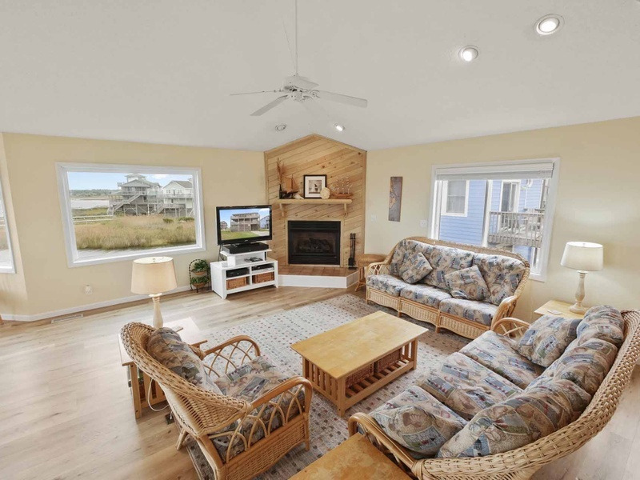
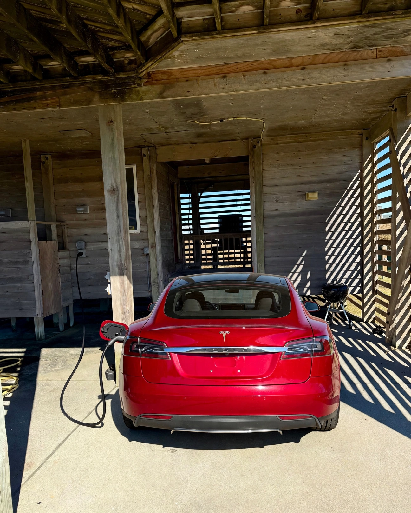

A soundfront hideaway in Frisco, on Hatteras Island — panoramic views from the Pamlico Sound to the ocean, and star-filled skies over two wrap-around decks every clear night.
Music: “Windswept” by Kevin MacLeod, CC BY 4.0 — tranquil acoustic guitar
Why “Star Gaze”?
Why not stargaze, when you can see star-filled galaxies above every night from this soundfront home's two wrap-around decks — or from the hammock? Set your sights on panoramic sound-to-ocean views: watch the path of migrating pelicans, or spot a heron in the nearby marsh. This OBX nature show is one reason a family hideaway here leaves lasting impressions long after you leave.
The other reason is the house itself — four bedrooms and two-and-a-half baths that meet a vacation's needs from top to bottom, in comfort and casual resort style. Whether you come for stargazing, sunbathing, windsurfing, kiteboarding, beachcombing, fishing, or crabbing — or some of each — Star Gaze is the perfect base for it.
Simulated fly-in from a still aerial photo — no actual drone footage.
Inside the house
Start at the top, in the bright and roomy upper-level great room — vaulted ceiling, wood floors, and walls of windows made for kicking back. Catch a favorite show on the TV, gather around the gas fireplace, or retell the day's adventures.
The kitchen has everything you need to prep a meal and serve it at the eight-seat dining table, where sunset vistas are on the menu. A half bath and direct deck access round out the level.
Now casual and sleepy, descend to the first level, where three queen bedrooms and one bunk room — two bunk beds — are ready to welcome you to a night of restful slumber. Each bedroom offers water vistas and its own TV/DVD player.
One queen bedroom opens privately onto the soundfront deck and shares a jack-and-jill bathroom — the early riser's favorite. New for 2026: the first-level twin bedroom has been upgraded to a queen.

On the upper-level sun deck, with furnishings for savoring the ocean and sound vistas. Feel the stress melt away as you soak at sunset — then stay for the stars.
Dinner with a sunset view, every night. The kitchen is stocked with a coffee maker, toaster, and blender, and there's a charcoal grill outside.
Five TVs with DVD players, books, puzzles, and games for rainy days — plus high-speed WiFi and an electronic keyless lock for easy comings and goings.
Outside
Private sound access right from the backyard — sandy bottom, no bulkheads. Wade, launch a kayak, or fish and crab without leaving home. The big grassy yard is made for rigging wind sports and outdoor play.
The ocean beach is a 3–4 minute walk — beautiful and uncrowded — and a lifeguarded beach is just a short walk away. Two wrap-around decks, a covered patio, an outdoor shower with a changing area, board storage, and a fish-cleaning station cover the rest of outdoor life.
Walk to the Pamlico Sound — sunsets, herons, and migrating pelicans.
Walk to the Outer Banks ocean beaches and Frisco Beach.
To the community beach access and a lifeguarded beach.
Gallery
Tap any photo to see it full-size, then step through the rest with the on-screen arrows, the left and right arrow keys, or a swipe.
Amenities
*Sheets (beds made), bath and hand towels, and washcloths are provided May 22 – September 3, 2027; additional linens and towels are available for rent outside that window.

RenderingDriving an EV down to Hatteras? Star Gaze has a 220V outlet charging station in the covered parking area under the house. The covered outlet is on the wall just to the left of the stairs — pull straight in, as shown in the rendering, and plug into the outlet there.
Because the spot is under cover, charging runs rain or shine, and your car stays shaded while it tops up.
Rates
| Week (2026) | Weekly rate |
|---|---|
| Aug 16 – 23 | $1,595 |
| Aug 23 – 30 | $1,295 |
| Aug 30 – Sep 6 | $995 |
| Sep 20 – 27 | $795 |
| Sep 27 – Oct 4 | $695 |
| Oct 25 – Nov 1 | $545 |
| Nov 1 – 8 | $545 |
| Nov 8 – 15 | $545 |
| Nov 15 – 22 | $545 |
| Nov 22 – 29 (Thanksgiving) | $645 |
| Dec 20 – 27 | $595 |
Base rates shown exclude taxes and fees; table from the Surf or Sound feed, last updated July 24, 2026. A $35 pre-reservation fee reserves a week before its rates are set. For current availability and 2027 rates, use the booking link below — Surf or Sound prices each week through its booking calendar.
Guest ratings
“Excellent” on Vrbo across 8 reviews. Recent guests (Aug 2026, Jun 2025, May 2024, Sep 2023) rated their stays 10/10, praising the sound views, easy sound and beach access, the layout, and the beds.
Around Frisco
Tavern on 12, Happy Belly, Frisco Bay Coastal Grill, Pop's Raw Bar, and Alien Java — all close by in Frisco and Hatteras Village.
Frisco Native American Museum is a 3-minute drive; the Hatteras Village Welcome Center, 7 minutes.
Fishing, kayaking, windsurfing, and kiteboarding from your own backyard; crabbing in the sound; beachcombing on an uncrowded ocean beach.
Booking
Star Gaze is professionally managed by Surf or Sound Realty (listing #986) — a Hatteras Island agency, locally owned for 49 years. Booking, payments, and keys all run through them.
Book Star Gaze at Surf or Sound
Surf or Sound Realty · 40974 NC Highway 12, Avon, NC 27915
800-237-1138 · rent@surforsound.com
Open 7 days, 8:30 AM – 5:00 PM EST
Questions about the house itself? Write the owners at info@stargazeobx.com.